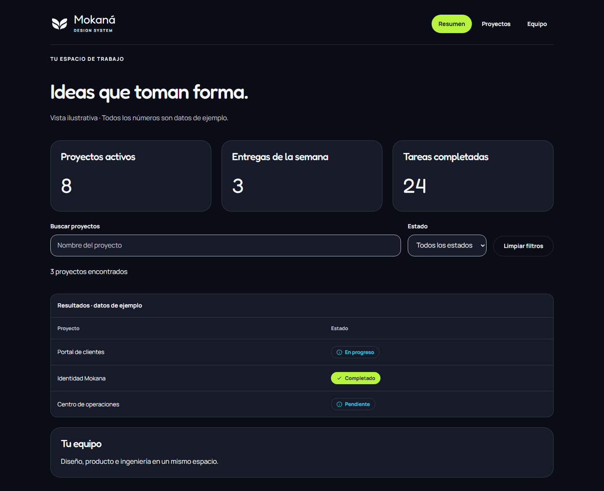

MOKANA DESIGN SYSTEM · V0.1
Tu marca.
Una base para crecer.
Biblioteca editable en Figma, componentes React + TypeScript y documentación interactiva en Storybook.
Abrir Figma ↗ · Abrir Storybook local ↗
Contenido
- 57 variables en Figma: primitivos y roles semánticos para claro y oscuro. 9 estilos de texto y 2 de efecto.
- 13 familias: Button Primary/Secondary/Ghost, Input, Select, Card, Badge, Alert, Navigation, Table, Modal, EmptyState y Toggle. 142 variantes, 8 íconos y el isotipo original.
- 6 patrones: Auth, Dashboards, CRUD, Filters, Empty states y Settings.
- 25 ejemplos de Storybook. Mokana Base y contrato para futuros temas de producto.
Figma se organiza en tres páginas por el límite del plan Starter. Los temas usan colecciones separadas de un modo. No se han inventado productos A, B o C.
Abrir y desarrollar
Para ver el Storybook ya compilado, abre ABRIR-STORYBOOK.cmd y visita http://127.0.0.1:6006/. Se requiere Node.js. No abras directamente los HTML de storybook-static: necesitan un servidor local.
Para editar la biblioteca, desde esta carpeta:
npm ci
npm run storybook
Comandos de verificación:
npm run tokens
npm run typecheck
npm run build
npm run build-storybook
npm test
Las pruebas de navegador usan Microsoft Edge instalado y Playwright. Las versiones exactas están fijadas en package-lock.json.
Integrar en un producto
Instala esta carpeta como dependencia local después de compilarla, o incorpora el paquete dentro de tu monorepo. El paquete aún no está publicado en npm.
npm install /ruta/a/mokana-design-system
import { Button, Input } from '@mokana/design-system';
import '@mokana/design-system/styles.css';
<div className="mk" data-theme="light" data-product="mokana">
<Input label="Nombre del proyecto" />
<Button icon="arrow">Continuar</Button>
</div>Copia public/fonts y public/brand al directorio público del producto. Para Next.js, importa los componentes interactivos desde una frontera 'use client'. Los ejemplos de autenticación y CRUD son locales; deben conectarse a los servicios del producto.
Diseño y código
tokens.json registra la base compartida; npm run tokens genera el CSS. figma-map.json relaciona cada familia con su nodo de Figma, export React y ejemplo de Storybook.
No existe sincronización automática bidireccional. La biblioteca de Figma está creada y es editable, pero no publicada como biblioteca de equipo. Code Connect no está activado; la guía de la integración exige componentes publicados y un plan compatible.
Fuente de marca: mokana-landing-page, commit 1e77c567b5b14e5c7279be2aefcfd0580277ec1f. Se conservaron paleta, tipografías, espacios, radios y logo. Los componentes y patrones de aplicación son extensiones propuestas. La landing original no fue modificada.
Validación realizada
- Compilación de la biblioteca JavaScript, declaraciones TypeScript y Storybook: correctas.
- 50 verificaciones de historias/tema con axe: ninguna infracción detectada en las reglas WCAG A/AA ejecutadas.
- 6 vistas móviles a 390 px: sin desbordamiento horizontal de página.
- Diálogo: Escape y devolución de foco; CRUD: crear, editar y confirmar eliminación; filtros: búsqueda y limpieza; autenticación: validación; preferencias: teclado y guardado; estado vacío: transición.
- Figma: revisión visual de foundations, controles, componentes, patrones e iconografía. Sin fuentes faltantes ni rellenos sólidos sin vincular en los componentes principales auditados.
La comprobación automática no sustituye una auditoría manual completa de accesibilidad. Evidencia: pruebas de interfaz y auditoría estructural de Figma.
